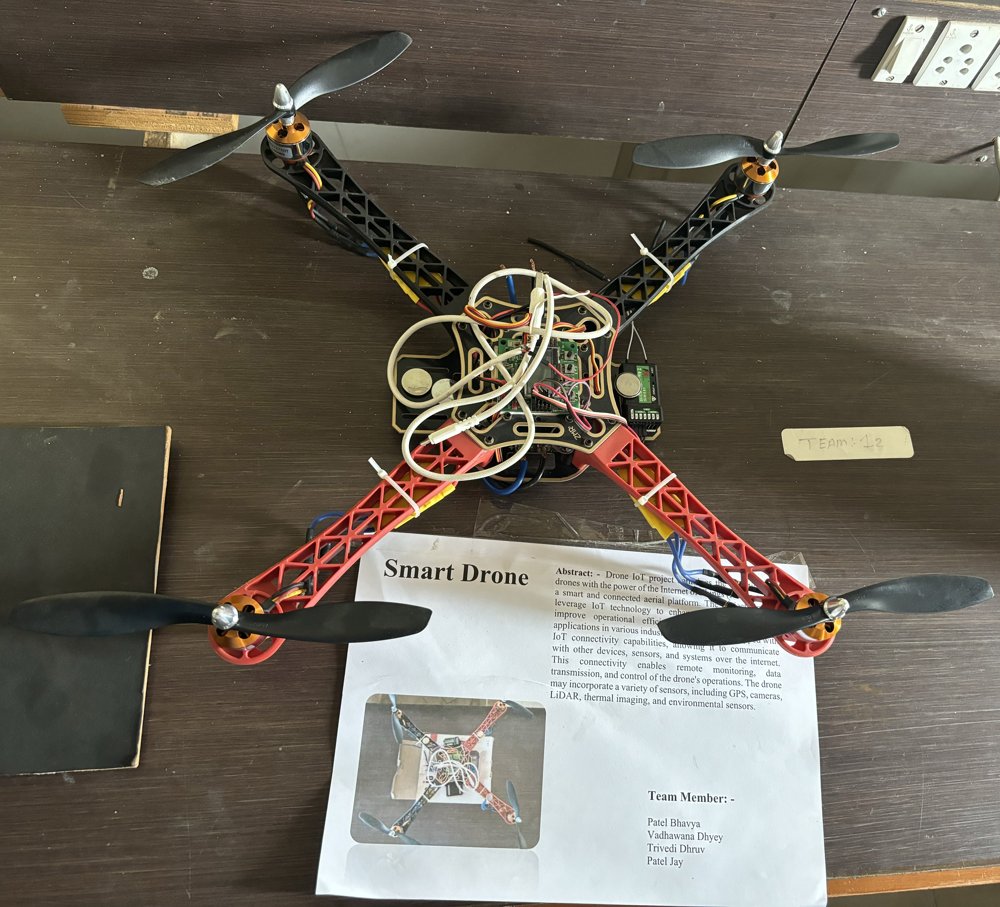
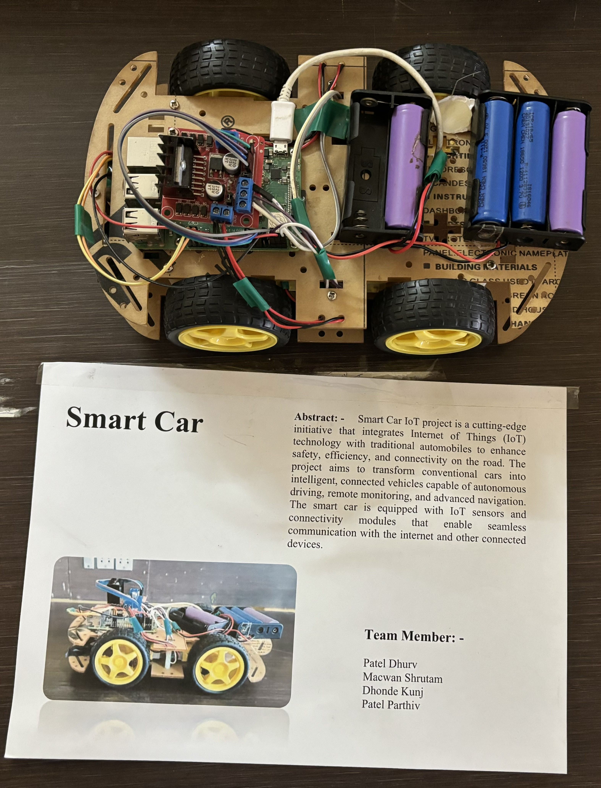
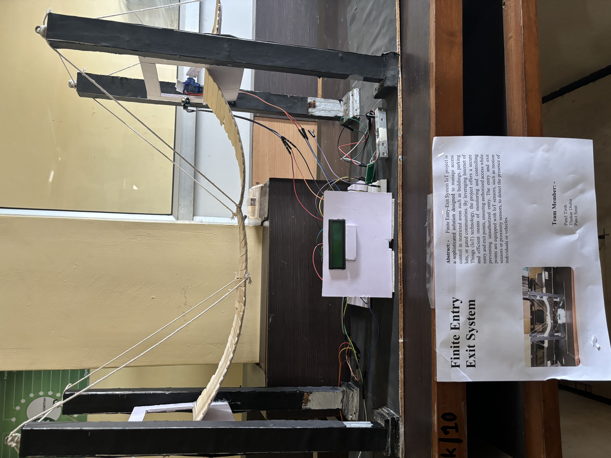

SPCAM Research Lab
Our IOT Project

- Smart Drone Project
- The agricultural industry is incorporating drones for the effective management of precision farming operations
- Drone and the Internet of Things are different technologies,
actively utilised and implemented across various fields
- By implementing both drone and IoT,
the flying IoT (IoT-Drone) is built as a new form of IoTdevice.
- Internet of Things (IoT); IoT; Drones; IoT-enabled Robots;
IoT-Robotics; IoT-Drones; AI
- e. IoT drones can
receive and transmit data and command signals in real-time while being
controlled through the IoTnetwork

- Smart Car Project
- The good automotive, anyone will simply management the system along with the speech recognition and might conjointly supervision the mechanism to hide the checkout distance
- The project aims to develop a cost-efficient smart vehicle system focusing on accident detection, passenger safety, drunk driver prevention, and an interactive cabin monitoring system.
- The NEO-6m module is a stand-alone GPS receiver featuring the high performance u-blox 6 positioning engine.
- It is an flexible and cost effective receiver that offers numerous connectivity options in a mini 160 x 122 x 24 cm package.
- It's a twin programming mechanism automotive within which it's each manual and machine mode.

- Smart Door Project
- A Finite State Machine has predefined states. Each state can have an optional Entry and an Exit method
- When machine is in certain state, it can take actions based on the state and the input.
- Arduino has been a versatile platform for creating hobby and proof of concept hardware projects.
- In some projects, Arduino sketch needs to perform actions based on the readings from the shields.
- The actions are simply changing the state(s) of the output digital pins based on the readings and the current state.